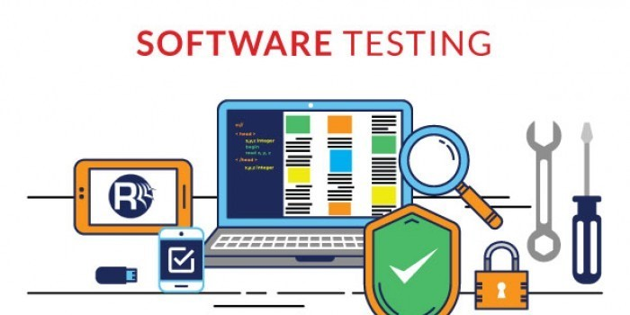

Perbedaan Testing Dalam Pembuatan Aplikasi

Dalam proses pembuatan sebuah aplikasi, perlu dilakukan sebuah tahapan yang bernama software testing. Tahapan ini penting dilakukan untuk menguji kualitas fitur, keamanan dan kinerja dari aplikasi tersebut. Pada umumnya developer masih suka menyepelekan testing karena memang cukup memakan waktu di awal proses development. Seiring berjalannya waktu, aplikasi yang dibangun pun akan semakin besar dan logika yang diimplementasikan juga semakin banyak. Pada titik tersebut, tingkat confidence akan semakin rendah jika ingin menambahkan fitur baru. Menjaga fitur lama tetap berjalan semestinya dan performa yang tetap baik menjadi masalah yang sulit untuk dipertahankan. Software testing merupakan salah satu engineering practices yang dapat menjadi solusi untuk permasalahan tersebut. Software testing juga dapat membuat aplikasi menjadi lebih predictable dan traceable. Dalam pengaplikasiannya software testing terbagi menjadi beberapa tingkatan. Secara garis besar berikut adalah tingkatan yang pada umumnya diimplementasi oleh perusahaan-perusahaan IT.
Unit Testing
Unit testing merupakan proses pengujian pada bagian terkecil dari aplikasi, biasanya pada pengujian dilakukan pada sebuah function ataupun object. Pengujian yang dilakukan biasanya cukup ketat mencakup semua kemungkinan yang dapat terjadi pada bagian yang diuji mencakup base case, edge case hingga corner case. Pada tahap ini tidak ada aplikasi atau service lain diluar aplikasi tersebut yang dipanggil, seperti mengakses database ataupun file. Untuk mengakomodir hal tersebut diperlukan mock data atau object tiruan.
Interogation Testing
Tahapan berikutnya setelah unit test adalah menguji unit-unit tersebut bekerja dalam satu kesatuan. Pengujian dilakukan untuk melihat sebuah aplikasi dapat terkoneksi dan berfungsi dengan aplikasi yang lain sesuai yang diharapkan. Jika aplikasi tersebut memerlukan aplikasi lain seperti database atau 3rd party service, maka koneksi antar aplikasi tersebut harus benar-benar dilakukan, bukan lagi dari mock data. Pengujian yang dilakukan pada tahap ini tidak boleh terlalu detail, karena tujuan dari test ini bukanlah menguji ketepatan dari sebuah aplikasi. Hal lain yang harus diperhatikan adalah data yang digunakan. Sebisa mungkin data yang digunakan hanya digunakan untuk pengujian aplikasi tersebut (tidak digunakan oleh aplikasi yang lain).
Functional Testing
Functional test berfokus pada business requirement-nya. Pada bagian ini hanya dicek keluaran dari flow yang dilakukan dan tidak mengecek state yang berjalan ditengah-tengahnya. Ada sedikit perbedaan antara integration testing dan functional testing, meskipun keduanya sama-sama menggunakan lebih dari satu komponen yang berinteraksi. Perbedaannya adalah integration test memiliki test yang lebih sederhana, seperti misalnya mengecek query dari database yang dijalankan dari aplikasi yang outputnya mendapatkan spesifik id dari tes yang diuji.
End-to-end Testing
End-to-end testing adalah testing yang menyamakan user behaviour dengan aplikasi dengan environment yang sama seperti production. Memastikan berbagai macam user flow berjalan dengan semestinya. Seperti misalnya menguji hal yang sederhana seperti loading screen, menyimpan data ataupun hal yang lebih kompleks lainnya seperti dari login berlanjut sampai selesai transaksi. End-to-end testing sangat bermanfaat, namun sangat costly. Mengimplementasikannya cukup sulit dan sangat berat untuk di-maintain apalagi jika sudah automated. Sangat direkomendasikan untuk memiliki sedikit tes pada bagian ini dan lebih berfokus pada lower-level testing (unit & integration tests). Karena pada bagian yang lebih rendah lebih mudah untuk diidentifikasi dan di trace back.
Acceptance Testing
Pengujian terakhir adalah dimana pengujian dilakukan secara keseluruhan atau biasa disebut end-to-end testing. Pengujian ini lebih difokuskan pada flow atau behaviour sebuah aplikasi. Pengujian bisa dilakukan dengan cara melakukan simulasi nyata penggunaan aplikasi pada environment yang sebenarnya. Hal yang diuji juga sangat general seperti melakukan normal flow ataupun masukan kosong. Ini adalah tahapan terakhir sebelum akhirnya aplikasi benar-benar siap untuk dirilis.
Performance testing
Performance testing digunakan untuk mengukur kemampuan performa suatu aplikasi sampai suatu batas tertentu. Tes ini bukan merupakan functional-test dan bisa dalam berbagai macam bentuk untuk memahami reliability, stability dan availability pada environment-nya. Sebagai contoh, bisa berupa mengamati response time ketika menjalankan request dalam jumlah yang sangat banyak ataupun melihat suatu sistem berinteraksi dengan jumlah data yang cukup besar. Pada umumnya performance testing cukup mahal untuk diaplikasikan dan dijalankan, namun dapat dijadikan tolak ukur apakah sistem tersebut dapat mengakomodasi traffic yang ada.
Smoke testing
Smoke testing dapat diartikan seperti pre-testing. Tes ini harus berjalan dengan sederhana dan cepat. Tujuannya adalah untuk memastikan tes-tes kompleks lain yang akan dijalankan berikutnya dapat berjalan dengan baik, sehingga ketika ada hal major yang rusak dapat terdeteksi diawal. Selain itu juga dapat difungsikan sebagai warm-up caching, sehingga cache system yang ada pada aplikasi dapat “diisi” terlebih dahulu.
Bagaimana membuat automated tests
Tes-tes diatas tentu dapat dilakukan masing-masing individu, namun akan sangat mahal dan tidak produktif untuk dilakukan. Sebagai manusia, tentu kita punya batasan-batasan dalam melakukan tes-tes dalam jumlah yang besar, berulang dan dengan cara yang tidak manusiawi. Tapi tentu komputer dapat melakukan hal-hal tersebut dengan sangat mudah dan cepat, juga dapat mengingat kombinasi huruf dan angka yang sulit dalam jumlah yang banyak tanpa kesulitan. Untuk membuat automated test, diperlukan test suite framework yang tepat dan cocok dengan aplikasinya. JUnit, Mocha, RSpec adalah salah satu contoh testing framework yang dapat digunakan dari masing-masing bahasa pemrograman. Ada berbagai macam opsi lainnya dari setiap bahasa jika mau mencari, jangan lupa untuk tanya kolega ataupun komunitas developer untuk mencari tahu mana framework yang tepat.
Ketika tes dapat dijalankan dengan script dari terminal, maka tes yang telah dibuat tentu dapat dengan otomatis pula dijalankan pada continuous integration server seperti Bamboo atau CircleCI ataupun menggunakan cloud service seperti Bitbucket Pipelines. Tools-tools seperti inilah yang dapat me-monitor repository dan menjalankan test-suite ketika ada perubahan pada main repository.
Penutup
Testing berperan penting untuk mengukur seberapa baik kualitas aplikasi dimana user bisa menggunakan aplikasinya (seperti login, menyimpan data). Selain itu berfungsi juga agar aplikasi yang dibuat tidak crash ketika ada data buruk yang masuk ataupun hal-hal lain yang tidak diinginkan dalam pengoperasiannya. Antisipasi dari typo, data yang belum lengkap ataupun salah URL. Aplikasi harus dapat mengambil dan mengolah data dengan mudah dan menjaganya jika data tersebut memang hanya user tersebut yang dapat mengaksesnya. Testing yang bagus dapat mengukur kemampuan aplikasinya sampai pada batas yang memang aplikasi tersebut dapat lakukan.